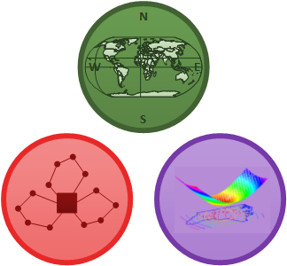

|
ISE 754: Logistics Engineering
Fitts Department of Industrial and
Systems Engineering
North Carolina State University
|
| Fall
2019 |
Mon
and Wed |
11:45
– 1:00 p.m. |
Daniels
327 |
This course will present the
fundamental quantitative approaches that are used in the design and
control of logistics systems, including modeling issues, design concepts,
computational considerations, and the use of commercial software packages.
This quantitative, or engineering, approach to logistics is meant to
complement that of business logistics, which is concerned with the
management of logistics processes and relationships.
Web References
Matlab and Gurobi
Matlab is
available in all of the Eos and Unity computing labs on campus and a student
version is available for download to your personal computer (we will be
using version R2019a). Gurobi is available for download
for students, with a one-year license for the full-featured,
no-size-limit version of the software (we will be using version 8.1.0).
- Downloading a copy
of Matlab, for NCSU
students.
- Downloading
a copy of Gurobi, free for students.
- You will need to create an account using your @ncsu.edu email and
then access your
free named-user academic license while connected to the NCSU
network. After registering the software with the license, you will be
able to use Gurobi anywhere. In order to run Gurobi from Matlab,
execute the following command: path(path,'c:\gurobi810\win64\matlab\');
- Distance students: Gurobi will not work via use of the NCSU
VPN for an individual Gurobi license (the network traffic does
not route traffic thru NC State for this to work). You should copy
this gurobi.lic file (it will direct there
Gurobi software to a network license server) to the root of your
"c:\gurobi8xx" folder (or Mac equivalent) and use the VPN thereafter
to connect to the ENGR license server.
- Downloading
a copy of Cplex, free for students.
- Basic
Concepts in Matlab,
document providing a short overview of Matlab
- Introduction
to Computing - Matlab,
short video lectures by Lina Battestilli, NCSU Computer Science Dept.,
covering the basics of Matlab
(requires NCSU ID to access)
- Documentation,
Manuals, and Tutorials on the MathWorks website (the developers of
Matlab) provide the most
comprehensive and up-to-date reference source for Matlab.
- Octave and Scilab
are free languages that are so similar to Matlab
that it is very easy to port programs.
- R is a free language
for statistical computing and graphics that is similar to Matlab
- Python is a free general-purpose
programming language that, together with the NumPy, SciPy, and
Matplotlib packages, provides capabilities similar to Matlab
(see NumPy
for Matlab Users).
- Julia, a new free programming
language that combines the ease of use of Matlab,
Python, or R with the speed of C++, Fortran, or Java (see differences
between Julia and Matlab).
- Best
Practices for Scientific Computing, describes how to best use a
high-level language like Matlab
in a research environment.
Math Programming Solvers
Transportation
- Freight calculator,
provides market estimates ocean, air, rail, and truck shipments
- TL, LTL, and PX PPI,
select Series ID=PCU484121484121 (TL), Series ID=PCU484122484122 (LTL),
and Series ID=PCU492110492110 (PX: Couriers and express delivery
services, not seasonally adjusted) for current monthly and annual PPI
values
- FedEx LTL
and PX
rates, provide one-time (spot) LTL and PX rate quotes
- UPS rate quotes
for PX, LTL, TL, and Ocean
- Glossary
of Shipping Terms from U.S. Department of Transportation
- National
Highway Planning Network (NHPN), the Federal Highway
Administration's road network database
Geocoding and Mapping
- FIPS
Codes:
- State
FIPS Codes: two-digit FIPS State Numeric Codes and the
two-letter FIPS State Alpha Code for each state
- County
FIPS Codes: three-digit FIPS County Nuneric Codes for each
county in each state.
- Coastline
Extractor, extract coastline segments bounded by a specified
latitude/longitude range
- How far is it?, calculates
great circle distances (same as DISTS using 'mi')
- Aviation Formulary
V1.23, has information on great circle distances
- GIS FAQ
Question --Q5.1--: What is the best way to calculate the great
circle distance (which deliberately ignores elevation differences)
between 2 points? (originally at
http://www.census.gov/cgi-bin/geo/gisfaq?Q5.1)
TSP and VRP
- TSPLIB,
standard test instances for TSP and Capacitated VRP
Warehousing
Misc.
- UNSPSC, UN Standard Products and
Services coding system to classify both products and services for
ecommerce